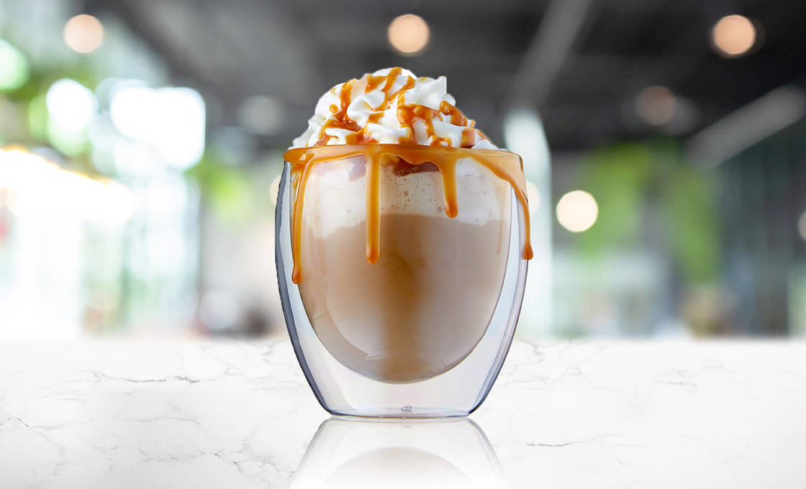

| Product | Name | Price | Product description |
|---|
|
Iced Matcha |
145 |
Our Iced Matcha is made with finely ground, premium Japanese green tea powder whisked into cold water and poured over ice for a smooth, refreshing experience with earthy undertones. Perfect for those seeking a balanced, antioxidant-rich beverage with a gentle caffeine boost. Served in a 16oz cup with optional milk or sea salt creme on the side. |
|
Spanish Latte |
140 |
Indulge in the smooth, velvety richness of our Spanish Latte. A perfect blend of espresso and steamed milk, sweetened with a hint of condensed milk, this delightful drink offers a creamy, luscious experience with every sip. It's the kind of coffee that brings warmth to your soul and a touch of sweetness to your day. For those who appreciate a cozy, comforting treat, our Spanish Latte is your ideal pick—ideal for moments of relaxation and enjoyment at Digital Espresso. |
 |
Caramel Macchiato |
140 |
Our Caramel Macchiato is a rich and creamy blend of bold espresso and sweetened milk, served over ice for a refreshing twist on a classic favorite. With its smooth texture and slightly caramelized flavor, this 16oz delight offers the perfect balance between strong coffee notes and a touch of indulgent sweetness. |
|  |
Sea Salt Latte |
150 |
Our Sea Salt Latte is where savory meets sweet. Bold espresso is blended with creamy milk and topped with a delicate layer of sea salt creme, creating a perfect balance of flavors. Served cold in a 16oz cup, it's a refreshing treat with a hint of sophistication. |
|
Americano |
150 |
Simple, strong, and refreshing. Our Iced Americano is made with double shots of espresso poured over cold water and ice for a clean, bold flavor that hits just right. Served in a 16oz cup, it’s the go-to drink for purists who appreciate a no-fuss, low-calorie caffeine boost. |